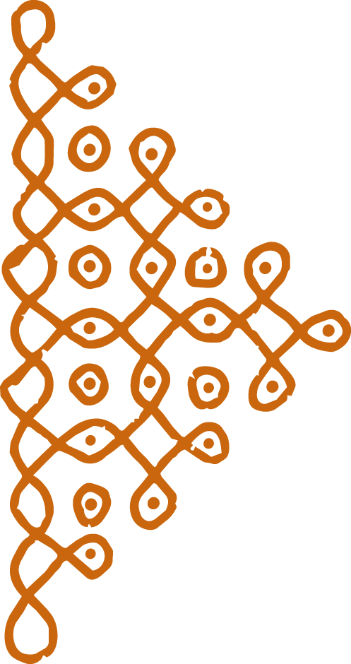
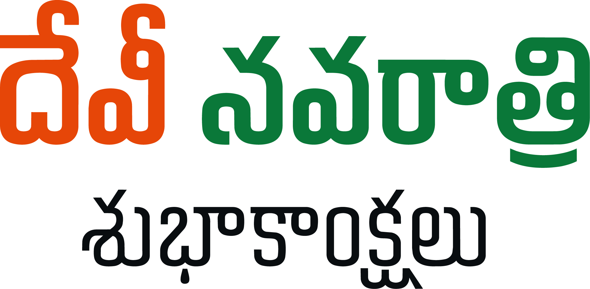
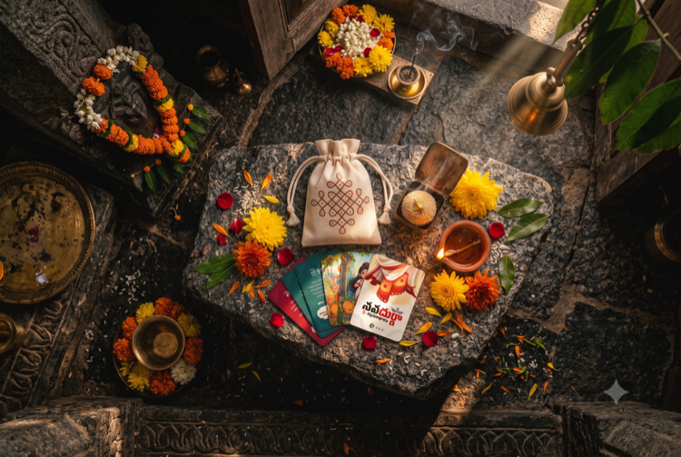

నవరాత్రుల సందర్భంగా, మన తెలుగు సంప్రదాయం ప్రకారం 100 మంది ఆడపడుచులకు పసుపు, కుంకుమ, తాంబూలంతో కూడిన కానుకలను ఇస్తున్నాము.
ఈ పవిత్ర కార్యంలో మీరు కూడా భాగస్వాములు కండి అమ్మవారి ఆశీస్సులు పొందండి.
హృదయపూర్వక ధన్యవాదాలు
మా ఈ ప్రయత్నానికి మద్దతుగా నిలిచిన దాతలకు, శ్రేయోభిలాషులకు పేరుపేరునా మా కృతజ్ఞతలు. ఆ దుర్గామాత కరుణాకటాక్షాలు మీకు, మీ కుటుంబ సభ్యులకు ఎల్లప్పుడూ ఉండాలని మనసారా కోరుకుంటున్నాము.